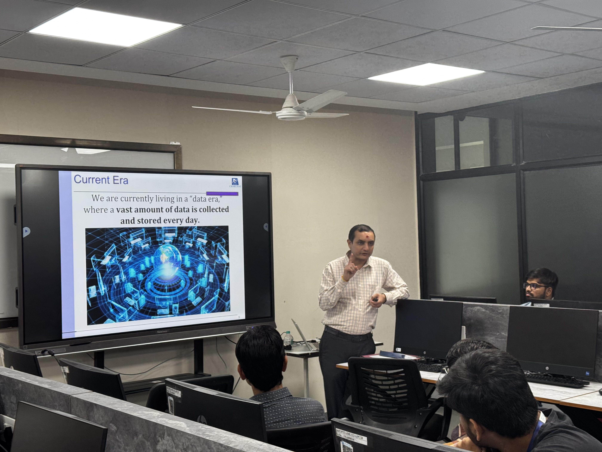
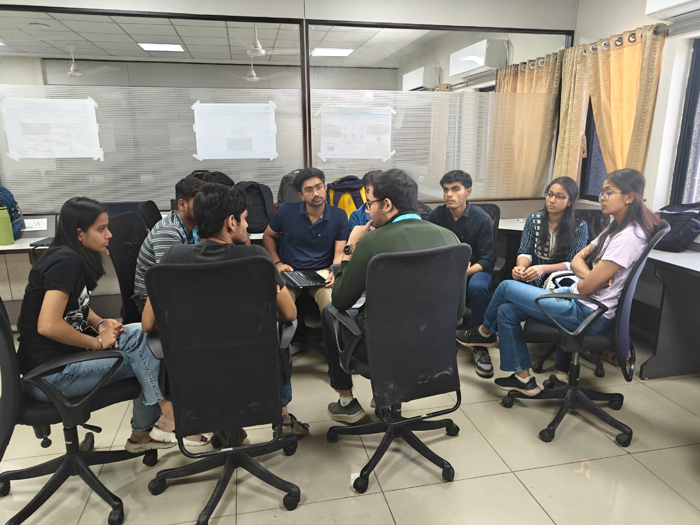
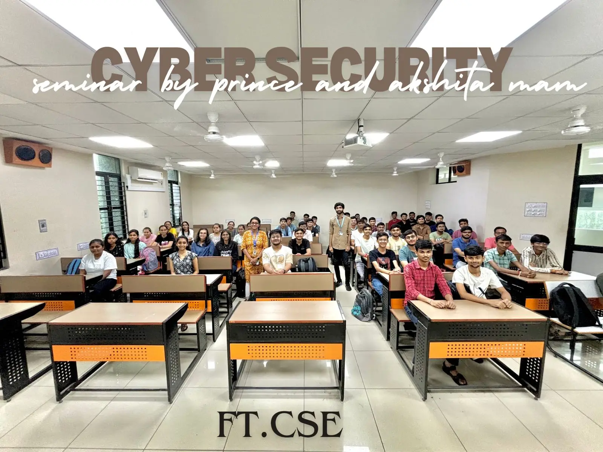
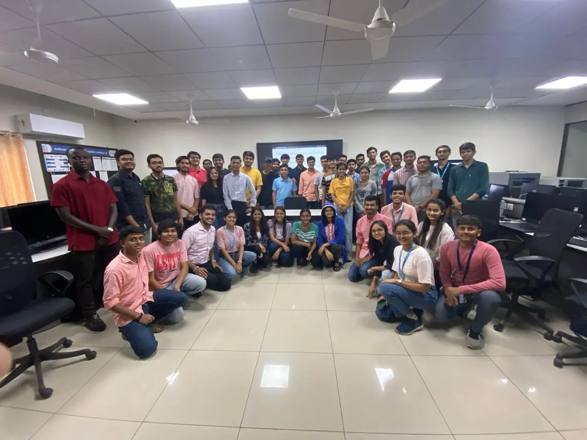

Clubs at CHARUSAT
CHARUSAT offers a vibrant array of clubs that cater to diverse interests, from technical and cultural to sports and social initiatives. These clubs provide students with opportunities to explore their passions, develop skills, and engage with the community.
Eloquence Club
The Eloquence Club is dedicated to fostering a vibrant community of individuals equipped with essential soft skills, empowering them to excel in both their personal and professional lives.
With a strong commitment to continuous learning, practice, and growth, the club serves as a platform where students can refine their communication, teamwork, leadership, and adaptability—skills that are crucial for success in today's dynamic world. Through a variety of engaging events and activities, the Eloquence Club provides opportunities for students to develop confidence, articulate their thoughts effectively, and collaborate seamlessly. Our mission is to nurture individuals who are not only competent in their respective fields but also capable of making a meaningful impact through their enhanced interpersonal abilities.
Faculty Advisors :
Prof. Nishat Shaikh | Dr. Parth Shah


AI/ML Club
The AI/ML Club of the CSE Department is a vibrant community dedicated to exploring the vast potential of Artificial Intelligence and Machine Learning.
Our mission is to bridge the gap between theory and real-world applications through workshops, expert talks, hands-on projects, hackathons, and research initiatives. Whether you're a beginner or an experienced enthusiast, the club provides opportunities to learn, collaborate, and innovate in cutting-edge AI technologies. By fostering creativity and technical expertise, we aim to shape the future of AI and empower students to make a meaningful impact in the digital world.
Faculty Advisors :
Prof. Harshul Yagnik | Prof. Abhishek Patel
 Cyber Security Club
The Cyber Security Club is a peer-learning community where students collaborate to explore various aspects of cybersecurity.
It provides a platform for members to share knowledge, discuss emerging threats, and work on real-world security challenges. Through workshops, hands-on sessions, and group discussions, participants enhance their technical skills and stay updated with industry trends. The club fosters a learning environment that encourages problem-solving, ethical hacking, and secure coding practices. Whether beginners or advanced learners, all members contribute to and benefit from the collective expertise of the group.
Faculty Advisors :
Dr. Martin Parmar | Dr. Sneha Padhiar
CyberKavach Club
Cyber Kavach is a student-oriented community that is committed to fostering hands-on peer learning sessions, knowledge-sharing, and collaboration to tackle emerging cyber challenges.
Through practical hands-on experience and industry exposure, the club aims to equip its members with the tools and expertise to defend the digital cyber world.
Faculty Advisors :
Prof. Akshita Kadam
 Tech Genius Club
At Tech Genius, we believe in transforming curiosity into creation. Born out of a vision to bridge the gap between students and the tech industry, our club collaborates with leading companies to bring real-world challenges to campus. From organizing high-energy college-level hackathons to preparing students for prestigious off-campus tech battles, we are the launchpad for future innovators. Whether you're a code wizard, design thinker, or curious beginner, Tech Genius is your platform to build, compete, and shine on a bigger stage. Together, we’re not just learning technology — we’re shaping it.
Faculty Advisors :
Prof. Jigar Sarda | Prof. Srushti Gajjar
The Tribe of Creativity
Tribe of Creativity aims to organize cultural and sports activities while providing a platform for students to showcase their creativity and teamwork. The club fosters sportsmanship, leadership, confidence, and collaboration through engaging events, encouraging holistic development beyond academics.
Faculty Advisors :
Prof. Trusha Patel | Prof. Rikita Chokshi